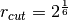

Basic System Setup¶
ESPResSo++ is implemented as a python module that has to be imported at the beginning of every script:
>>> import espressopp
ESPResSo++ uses an object called System to store some global variables and is also used to keep the connection between some other important modules. We create it with:
>>> system = espressopp.System()
Starting a new simulation with ESPResSo++ we should have an idea about what we want to simulate. E.g. how big should the simulation box be or what is the density of the system or what are the interactions and the interaction ranges between our particles.
Let us start with the size of the simulation box:
>>> box = (10, 10, 10)
In many cases you will need a random number generator (e.G. to couple to a temperature bath or to randomly position particles in the simulation box). ESPResSo++ provides its own random number generator (for the experts: see boost/random.hpp) so let’s use it:
>>> rng = espressopp.esutil.RNG()
Our simulation box needs some boundary conditions. We want to use periodic boundary conditions:
>>> bc = espressopp.bc.OrthorhombicBC(rng, box)
We tell our system object about this:
>>> system.bc = bc
>>> system.rng = rng
Now we need to decide which parallelization scheme for the particle storage we want to use. In the current version of ESPResSo++ there is only one storage scheme implemented which is domain decomposition. Further parallelized storages (e.g. atom decomposition or force decomposition) will be implemented in future versions.
The domain decomposition storage needs to know how many CPUs (or cores, if there are multicore CPUs) are available for the simulation and how to assign the CPUs to the different domains of our simulation box. Moreover the storage needs to know the maximum interaction range of the particles. In a simple Lennard-Jones fluid this could for example be . This value together with the skin value determines the minimal size for the so called linked cells which are used to speed up Verlet list rebuilds (see Frenkel&Smit or Allen&Tildesley for the details).
>>> maxcutoff = pow(2.0, 1.0/6.0)
>>> skin = 0.4
Tell the system about it:
>>> system.skin = skin
In the most simple case, if you want to use only one CPU, the nodeGrid and the cellGrid could look like this:
>>> nodeGrid = (1,1,1)
>>> cellGrid = (2,2,2)
In general you don’t need to take care of that yourself. Just use the corresponding ESPResSo++ routines to calculate a reasonable nodeGrid and cellGrid:
>>> nodeGrid = espressopp.tools.decomp.nodeGrid(espressopp.MPI.COMM_WORLD.size)
>>> cellGrid = espressopp.tools.decomp.cellGrid(box, nodeGrid, maxcutoff, skin)
Now we have all the ingredients we need for the domain decomposition storage of our system:
>>> ddstorage = espressopp.storage.DomainDecomposition(system, nodeGrid, cellGrid)
We initialized the DomainDecomposition object with a pointer to our system. We also have to inform the system about the DomainDecomposition storage:
>>> system.storage = ddstorage
The next module we need is the integrator. This object will do the actual work of integrating Newtons equations of motion. ESPResSo++ implements the well known velocity Verlet algorithm (see for example Frenkel&Smit):
>>> integrator = espressopp.integrator.VelocityVerlet(system)
We have to tell the integrator about the basic time step:
>>> dt = 0.005
>>> integrator.dt = dt
Let’s do some math in between:
Note
For 3D vectors like positions, velocities or forces ESPResSo++ provides a so called Real3D type, which simplifies handling and arithmetic operations with vectors. 3D coordinates would typically be defined like this:
>>> a = espressopp.Real3D(2.0, 5.0, 6.0)
>>> b = espressopp.Real3D(0.1, 0.0, 0.5)
Now you could do things like:
>>> c = a + b # c is a Real3D object
>>> d = a * 1.5 # d is a Real3D object
>>> e = a - b # e is a Real3D object
>>> f = e.sqr() # f is a scalar
>>> g = e.abs() # g is a scalar
In order to make defining vectors even more simple include the line
>>> from espressopp import Real3D
just at the beginning of your script. This allows to define vectors as:
>>> vec = Real3D(2.0, 1.5, 5.0)
Back to our simulation:
The most simple simulation we can do is integrating Newtons equation of motion for one particle without any external forces. So let’s simply add one particle to the storage of our system. Every particle in ESPResSo++ has a unique particle id and a position (this is obligatory).
>>> pid = 1
>>> pos = Real3D(2.0, 4.0, 6.0) # remember to add "from espressopp import Real3D"
>>> # at the beginning of your script
>>> system.storage.addParticle(pid, pos)
Of course nothing will happen when we integrate this. The particle will stay where it is. Add some initial velocity to the particle by adding the follow line to the script:
>>> system.storage.modifyParticle(pid, 'v', Real3D(1.0, 0, 0))
After particles have been modified make sure that this information is distributed to all CPUs:
>>> system.storage.decompose()
Now we can propagate the particle by calling the integrator:
>>> integrator.run(100)
Check the result with:
>>> print "The new particle position is: ", system.storage.getParticle(pid).pos
Let’s add some more particles at random positions with random velocities and random mass and random type 0 or 1. The boundary condition object knows about how to create random positions within the simulation box. We can add all the particles at once by creating a particle list first:
>>> particle_list = []
>>> num_particles = 9
>>> for k in range(num_particles):
>>> pid = 2 + k
>>> pos = system.bc.getRandomPos()
>>> v = Real3D(system.rng(), system.rng(), system.rng())
>>> mass = system.rng()
>>> type = system.rng(2)
>>> part = [pid, pos, type, v, mass]
>>> particle_list.append(part)
>>> system.storage.addParticles(particle_list, 'id', 'pos', 'type', 'v', 'mass')
>>> # don't forget the decomposition
>>> system.storage.decompose()
To have a look at the overall system there are several possibilities. The easiest way to get a nice picture is by writing out a PDB file and looking at the configuration with some visualization programm (e.g. VMD):
>>> filename = "myconf.pdb"
>>> espressopp.tools.pdb.pdbwrite(filename, system)
or (if vmd is in your search PATH) you could directly connect to VMD by:
>>> espressopp.tools.vmd.connect(system)
or you could print all particle information to the screen:
>>> for k in range(10):
>>> p = system.storage.getParticle(k+1)
>>> print p.id, p.type, p.mass, p.pos, p.v, p.f, p.q